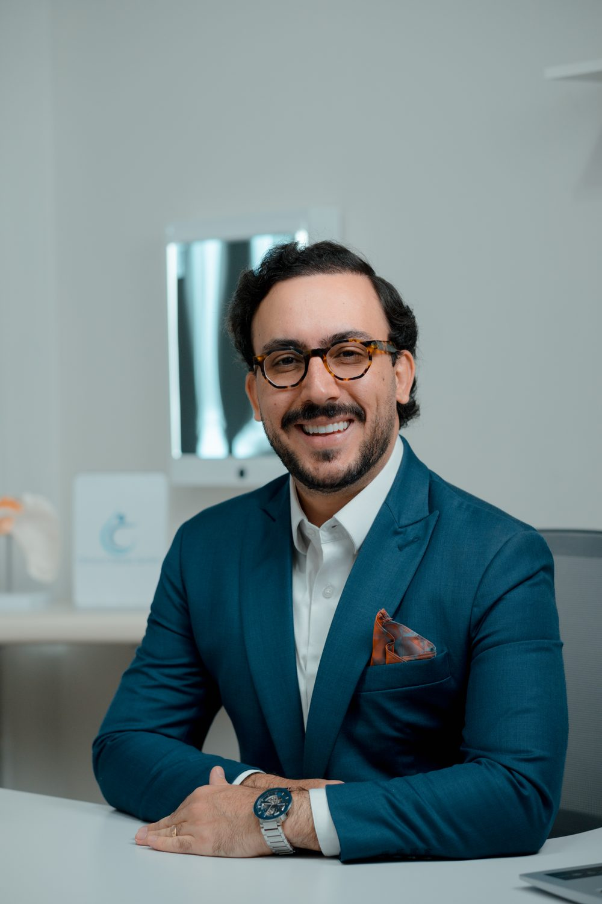
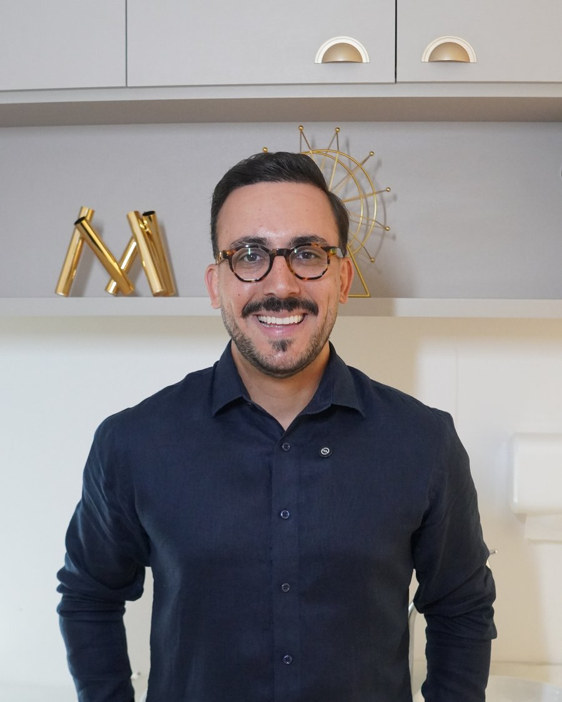

Quando a dor limita sua rotina, seus movimentos e sua qualidade de vida, adiar a decisão também tem um custo.
O Dr. Pedro Guilarducci é Cirurgião de Quadril e Joelho em São Paulo e oferece um cuidado completo e individualizado, do diagnóstico ao tratamento e à recuperação, com acompanhamento próximo em todas as etapas.
Porque cuidar não é apenas tratar, é estar presente em cada etapa do caminho.

Dor no quadril e no joelho não pode limitar a sua rotina.
O Dr. Pedro Guilarducci atua com uma abordagem individualizada, desde o diagnóstico preciso até o tratamento, conservador ou cirúrgico.
Formado em Medicina, com residência em Ortopedia e Traumatologia e especialização em Cirurgia do Quadril e Joelho, possui experiência na coordenação de equipes com mais de 40 profissionais e atuação em hospitais de referência da capital.
Experiência, precisão e cuidado em todas as etapas do tratamento.
Conheça a trajetória do Dr. Pedro →
Cada caso pede um caminho. A indicação nasce da consulta nunca o contrário.
Substituição da articulação desgastada pela artrose. Para voltar a andar sem dor.
Saiba mais →Cirurgia minimamente invasiva para lesões do labrum e impacto femoroacetabular.
Saiba mais →Nem toda dor no quadril termina em cirurgia. Conheça as alternativas conservadoras.
Saiba mais →Alívio da dor no quadril, joelho, ombro e coluna, sem cirurgia, em procedimento de consultório.
Saiba mais →Recebeu indicação de cirurgia? Confirme o diagnóstico antes de decidir.
Saiba mais →As condições mais comuns que levam o paciente ao consultório.
Diagnóstico criterioso, com exame clínico completo e exames de imagem. Cirurgia só quando é o melhor caminho para você.
Procedimentos com técnicas cirúrgicas modernas, que favorecem menor tempo de internação e recuperação mais previsível.
Você não recebe alta e some: o pós-operatório é acompanhado de perto, em conjunto com a fisioterapia.
Depoimentos de pacientes conforme a Resolução CFM 2.336/2023, sem promessa de resultado.
"Voltei a caminhar sem dor três meses após a cirurgia. Atendimento atencioso do início ao fim."
"Fui muito bem orientado antes e depois do procedimento. Me senti seguro em cada etapa."
"Busquei uma segunda opinião e recebi todas as explicações com clareza e paciência."
"Consulta sem pressa, com exame detalhado. Saí do consultório entendendo exatamente o meu problema."
"Excelente profissional. Explicou o diagnóstico com calma e me apresentou todas as opções de tratamento."
"O pós-operatório foi acompanhado de perto. Sempre respondeu minhas dúvidas com atenção."
"Médico extremamente atencioso e competente. A equipe também é muito prestativa."
"Fiz infiltração no quadril e o alívio foi grande. Procedimento rápido e bem explicado."
"Minha mãe foi operada pelo Dr. Pedro e recebeu um cuidado excepcional em todas as fases."
"Profissional dedicado, pontual e muito humano no atendimento."
"Depois de muito tempo convivendo com dor, finalmente encontrei um médico que investigou a causa."
"Cirurgia tranquila e recuperação melhor do que eu esperava. Gratidão ao doutor e à equipe."
"Atendimento humanizado do começo ao fim. Todas as etapas foram explicadas com clareza."
"Ótima estrutura e atendimento. O doutor passa muita segurança e conhecimento."
"Me explicou com paciência por que eu não precisava de cirurgia. Honestidade que faz diferença."
"Acompanhamento impecável, da primeira consulta à alta da fisioterapia."
"Muito atencioso com pacientes idosos. Minha avó se sentiu acolhida e bem cuidada."
"Diagnóstico preciso depois de anos sem resposta. Hoje sigo o tratamento com confiança."
"A consulta foi completa: histórico, exame físico e revisão de todos os meus exames."
"Recomendo de olhos fechados. Profissional sério, atualizado e muito cuidadoso."
Duas unidades em São Paulo, para atendimento por convênio ou particular.
R. Manoel de Soveral, 144 · Santana, São Paulo/SP
Atende convênios · consulte a lista completa
R. Vilela, 652 · Sala 706 · Tatuapé, São Paulo/SP
Atendimento particular com emissão de nota para reembolso
Existe diagnóstico. Existe tratamento. Existe solução.
O primeiro passo é uma avaliação especializada. Envie uma mensagem e agende sua consulta.